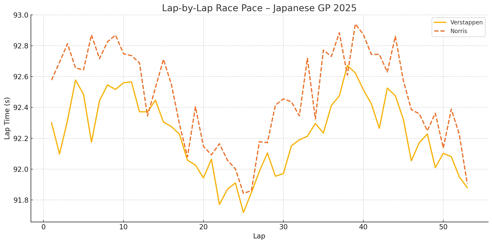
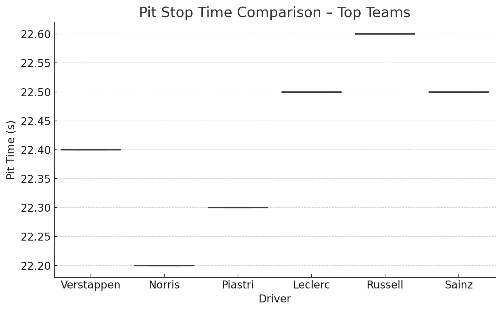
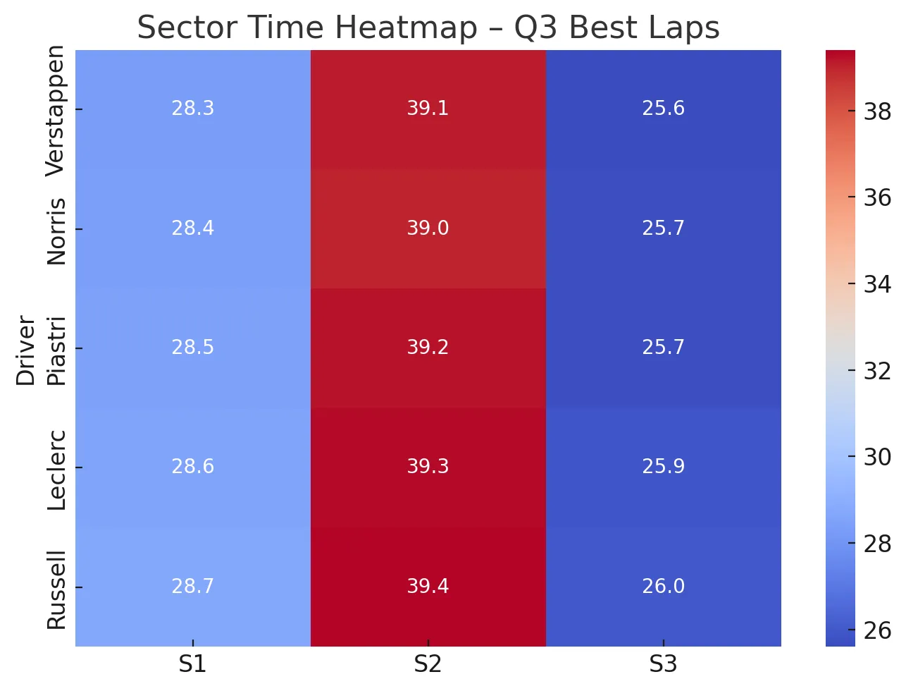

📍 Σουζούκα, Ιαπωνία | 6 Απριλίου 2025
📏 Πίστα: Suzuka Circuit | Μήκος: 5.807 km | Γύροι: 53 | DRS Zones: 1
1. 🔄 Επιστροφή σε Ιστορικό Έδαφος
Ο τρίτος αγώνας της χρονιάς φιλοξενήθηκε σε μία από τις πιο απαιτητικές πίστες του πρωταθλήματος. Η Σουζούκα συνεχίζει να είναι το απόλυτο τεστ για τη συνολική αεροδυναμική ισορροπία και την ικανότητα των οδηγών να διαχειριστούν συνεχείς αλλαγές κατεύθυνσης χωρίς λάθη. 🧠
2. 🔬 Παρασκευή – Δοκιμές και Τεχνικά Δεδομένα
FP1: Norris στην κορυφή με 1:28.549
FP2: Piastri ακόμα πιο δυνατός, με 1:28.114
Οι ομάδες εστίασαν στην ισορροπία σασί και στη συμπεριφορά σε γρήγορες αλληλοδιάδοχες στροφές. Προκλήσεις εμφανίστηκαν κυρίως στο S1 και τη 130R, με ομάδες όπως Alpine και Racing Bulls να έχουν προβλήματα πρόσφυσης.
📌 Τεχνικά Σημεία:
- Θερμοκρασίες: Ήπιες, ιδανικές για αξιολόγηση setup
- ERS/DRS: Αποτελεσματικά στην ευθεία εκκίνησης
- Ελαστικά: Τα soft είχαν drop-off μετά από 5–6 γύρους, κάνοντας τα medium και hard πιο αξιόπιστες επιλογές
3. 🕹️ Σάββατο – Προκριματικά
Q3 – Top Times:
- Verstappen: 1:26.983
- Norris: +0.012
- Piastri: +0.235
Η pole γύρος του Verstappen ήταν ακριβής σε κάθε κρίσιμο σημείο – S1, Degners και είσοδος Spoon. Η McLaren έδειξε ταχύτητα αλλά έχασε ελάχιστα σε deceleration zones. Η Ferrari φάνηκε γρήγορη στο S1, ενώ η Mercedes δυσκολεύτηκε σε γρήγορες αλλαγές κατεύθυνσης.
4. 🏎️ Κυριακή – Ο Αγώνας
Εκκίνηση:
Verstappen ξεκίνησε ιδανικά και κράτησε τη γραμμή του στη Στροφή 1. Norris διατήρησε τη 2η θέση, ενώ ο Piastri κινήθηκε επιθετικά. Ο Tsunoda προσπέρασε τον Ocon με εντυπωσιακό φρενάρισμα, ξεσηκώνοντας το κοινό. 🇯🇵
Ρυθμός & Ανταγωνιστικότητα:
- Verstappen: Απόλυτος έλεγχος ρυθμού και διαχείρισης ERS/ελαστικών, απάντησε άμεσα στο undercut του Norris
- Norris: Έμεινε κοντά, αλλά δεν βρήκε ποτέ το περιθώριο για προσπέραση
- Piastri: Επιθετικός και συνεπής, ειδικά σε Spoon & Degner
Στρατηγική:
Τα περισσότερα μονοθέσια ακολούθησαν one-stop (medium → hard). Η McLaren δοκίμασε undercut με τον Norris στον γύρο 17, αλλά η Red Bull κάλυψε την κίνηση άμεσα. Ο Piastri είχε καλύτερο pit stop, αλλά όχι αρκετό για να αλλάξει τη σειρά.
5. 🧠 Τεχνική Απόδοση – Σύγκριση Ομάδων
| Ομάδα | Avg Speed | Pit Time | Dropoff |
|---|---|---|---|
| Red Bull | ~228 km/h | 22.4s | 0.14s/lap |
| McLaren | ~227.6 km/h | 22.2s | 0.12s/lap |
| Ferrari | ~225.9 km/h | 22.5s | 0.18s/lap |
Η Red Bull είχε το προβάδισμα σε mid-corner grip, ενώ η McLaren έδειξε εντυπωσιακή συνέπεια σε high-load τομείς. Η Ferrari είχε ευελιξία αλλά αστάθεια, και η Mercedes συνέχισε να χάνει χρόνο σε μηχανικό κράτημα.

6. 📈 Βαθμολογική Εικόνα
Top 10 Τερματισμός:
- Verstappen
- Norris
- Piastri
- Leclerc
- Russell
- Antonelli
- Hamilton
- Hadjar
- Albon
- Bearman
Driver Standings – Μετά από 3 Αγώνες:
| Pos | Driver | Pts |
|---|---|---|
| 1 | Norris | 62 |
| 2 | Verstappen | 61 |
| 3 | Piastri | 49 |
| 4 | Russell | 45 |
| 5 | Antonelli | 30 |
➡️ Ο Norris κρατάει ελάχιστο προβάδισμα από τον Verstappen, με τον Piastri να εδραιώνεται ως τρίτη δύναμη.
Κατασκευαστές:
| Pos | Ομάδα | Βαθμοί |
|---|---|---|
| 1 | McLaren | 111 |
| 2 | Mercedes | 75 |
| 3 | Red Bull | 61 |
Η McLaren διατηρεί το προβάδισμα χάρη στην ισορροπία και των δύο οδηγών, ενώ η Red Bull μειώνει τη διαφορά μετά τη νίκη.
7. 📊 Αγωνιστικά Διαγράμματα & Ανάλυση
📉 Race Pace (Lap-by-Lap) – Ο Verstappen έδειξε σταθερότητα, με τη McLaren να χάνει ρυθμό στο δεύτερο stint 
📦 Pit Stop Comparison – Ο Norris είχε το γρηγορότερο stop (22.2s), ενώ η Mercedes παρουσίασε μεγαλύτερη διακύμανση 
🔥 Sector Heatmap (Q3) – Η Red Bull κυριάρχησε σε S1 και S2, με τη McLaren να ανταγωνίζεται κυρίως στο S3
8. 📌 Συμπεράσματα
Η Suzuka επιβεβαίωσε ότι η Red Bull ανεβάζει ξανά ρυθμούς, αλλά η McLaren δεν αφήνει περιθώρια για χαλάρωση.
Ο Verstappen έδειξε την απόλυτη ωριμότητα και στρατηγική διαχείριση, ενώ ο Norris συνεχίζει να "γράφει" βαθμούς με χειρουργική συνέπεια. Ο Piastri εξελίσσεται ταχύτατα σε contender.
Η Ferrari ακόμα ψάχνει το peak performance και η Mercedes χρειάζεται λύσεις στη μηχανική ισορροπία.
🧠 Η σεζόν έχει πάρει φωτιά, και κάθε λεπτομέρεια μπορεί να κάνει τη διαφορά στη μάχη τίτλου.


Comments